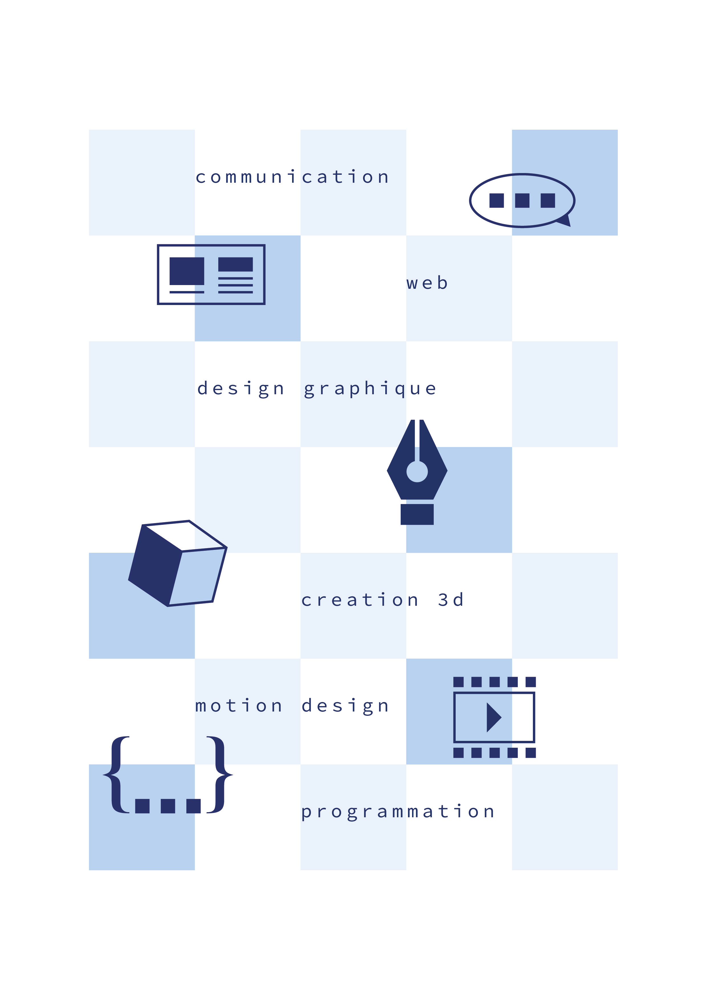
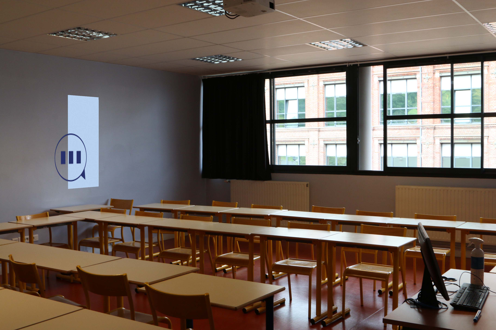
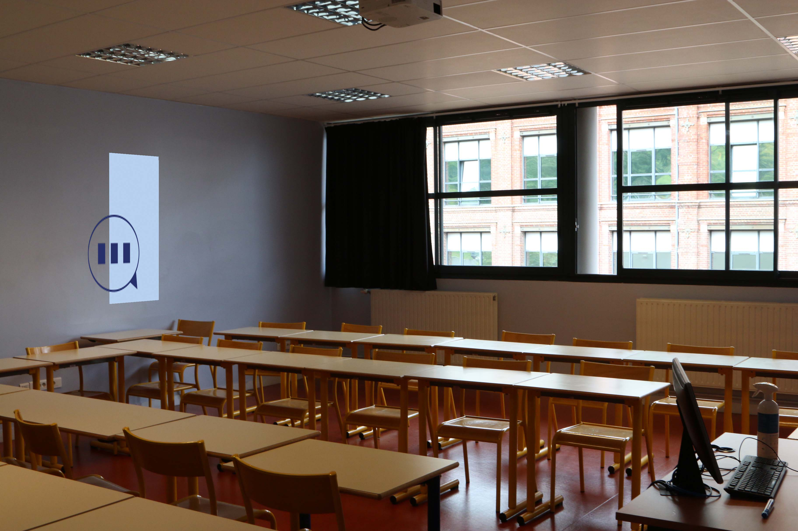

Présentation du projet
Pendant un cours, il nous a été demandé de créer plusieurs pictogrammes. Ils devaient exprimer la création et les technologies numériques mais également incarner chacun un différent champ d'activité.
La communication / Le motion design / le web / la 3D / La programmation / le design graphique
Démarche

Les six pictogrammes partagent tous la même structure et les mêmes couleurs. En effets, le carré bleu en fond permet de les unifier et de créer une impression de profondeur. L'élément au premier plan va désigner un champ d'activité. La couleur plus foncée va contraster avec le fond. J'ai essayé de rester simple avec les couleurs en gardant un bleu foncé et un bleu clair. Le dynamisme est quand même présent grâce au positionnement de l'élément par rapport au fond.
Affiche
Pour l'affiche, j'ai suivi une démarche similaire. Les pictogrammes sont placés sur un damier qui peut représenter des pixels. Cela ajoute un bleu très clair et augmente l'impression de profondeur. La typographie rappelle la technologie, elle disposée de manière à créer un rythme.
Compositing
 

Mes autres projets
- Billetterie
- Covid
- Hello World
- MMI Foundry
- Pasta Fresca
- Galerie